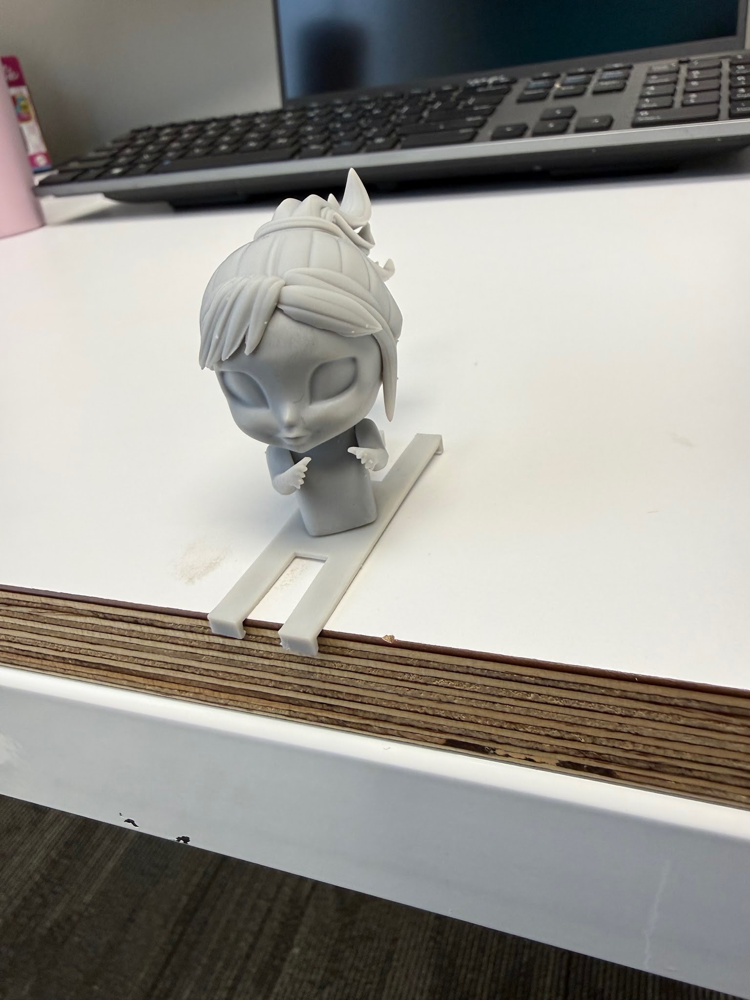
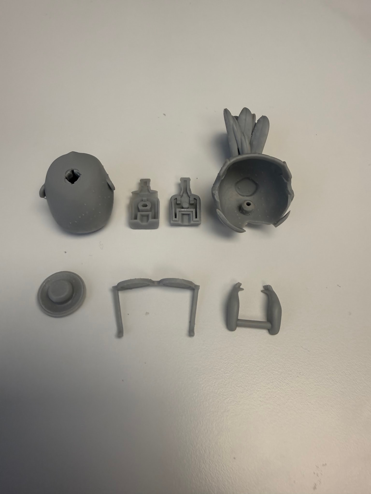
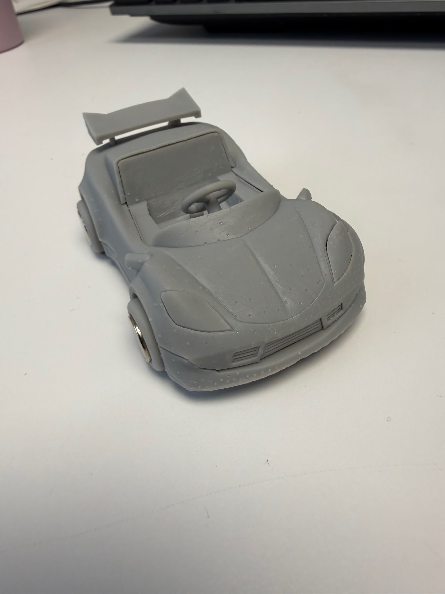
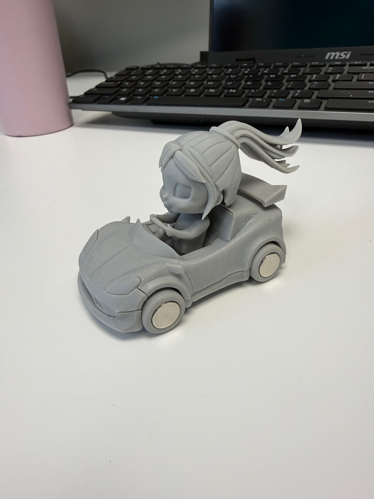
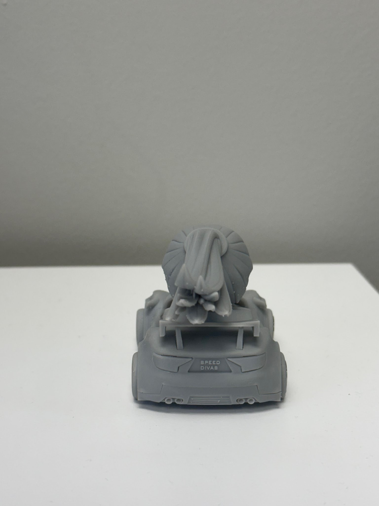

Summer Engineering Intern

At Upper Story, I transformed a rough toy car concept into a manufacturable multi-part assembly by refining geometry, designing snap-fits, and applying design-for-manufacturing principles. I worked closely with the underlying product concept to improve how parts fit together while ensuring the design remained practical for real-world fabrication and assembly.
Final assembled concept car with the driver integrated into the body.

Side profile study used to confirm proportions and driver-to-body balance.

Colored CAD render showing the vehicle and character together as a cohesive product concept.

Component breakdown highlighting the major body, stylized hair, and driver elements.

Print-ready parts showing the full set of individual components that came together in the final assembly.
The internship gave me hands-on experience in interpreting early-stage ideas and translating them into workable engineering solutions. I learned how much care goes into balancing functional performance with manufacturability, especially when a design needs to move from concept sketches to a parts list, tolerances, and assembly logic.
What made this project especially valuable was the emphasis on iteration. A concept may look promising at first, but the real engineering work happens in refining the details: material behavior, assembly fit, geometry adjustments, and making sure the final design can be produced reliably. That process strengthened my understanding of product development and gave me a clearer view of how creative design decisions become production-ready engineering work.